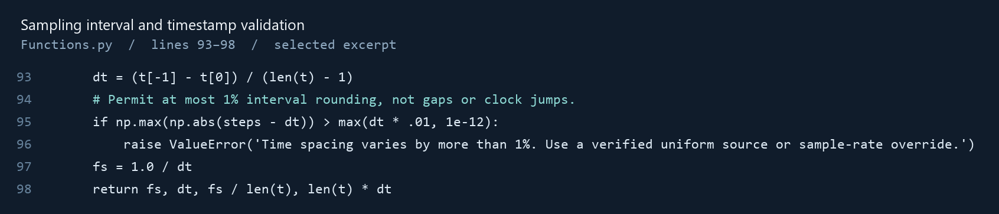
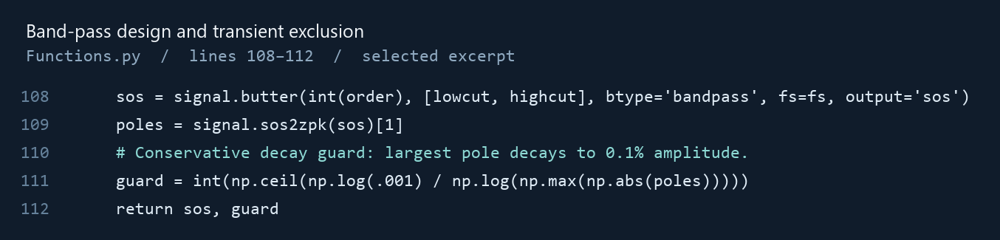

01 / Overview
Making the full calculation visible.
Orbit Analyzer plots one displacement channel against another to show the shaft’s measured motion. It is designed for paired X/Y vibration recordings and focuses on the band around the entered running speed, often called 1×.
The work combined a review of the original Python script, an audit of three input files, corrections to signal processing, a desktop interface and reproducible validation. The result connects the input recording to plots, metrics and exported settings in one workflow.
What changed
| Issue | Correction |
|---|---|
| Band-stop rejected the desired component. | Band-pass retains the chosen frequency region. |
| A preceding low-pass attenuated the running-speed component. | Removed the extra stage; apply one documented band-pass. |
| Sampling rate depended on the final timestamp. | Use elapsed time across N − 1 intervals and validate spacing. |
| One revolution was truncated to an integer sample count. | Interpolate a central slice spanning exactly 1/frequency seconds. |
| No reliable way to distinguish stale or transient-dominated results. | Clear results after input changes and exclude filter-edge samples. |
02 / Understanding the data
Three files. One recording. Different clocks.
Each row contains time in seconds, X displacement and Y displacement in the same unit. The reference workbook contains 32,769 paired samples over 5.12 seconds. The matching instrument export identifies a 6,400 Hz acquisition rate and displacement in micrometres.
| File | Rows | Finding |
|---|---|---|
| OrbitData.xlsx | 32,769 | Uniform 6,400 Hz timing; preferred reference. |
| OrbitData.csv | 32,769 | 12,898 nonincreasing time intervals; errors up to 0.005 s. Requires explicit clock reconstruction. |
| orbit_data.csv | 32,768 | First zero row omitted; 0.000156 s steps imply 6,410.2564 Hz. |
The two CSV displacement arrays match after accounting for the missing first row. Their rounding differs from Excel by at most 0.00004988 µm. The workbook’s X/Y values match the corresponding instrument export to floating-point precision.
Input contract
Exactly three columns are required: time, X, Y. A single text header is optional. CSV delimiters may be commas, semicolons or tabs. Blank rows are ignored; partly empty rows, nonnumeric values, NaN and infinity are rejected. Excel inputs use a selectable worksheet and numeric cached cell values. At least 16 samples are required, with a longer record needed for the selected filter.
The first (0, 0, 0) sample is retained and flagged. The importer never silently sorts, fills or drops numeric samples. Original input files remain unchanged.
03 / Using the application
Load, configure, inspect, export.
Open the recording
Choose CSV or XLSX. For Excel, select the relevant worksheet. Start with the reference workbook for this dataset.
Confirm the analysis settings
Enter the shaft frequency, low and high cutoffs, filter order and displacement unit. The reference settings are 24.97 Hz, a 22–28 Hz band, order 2 and µm. The unit field labels the data; it does not convert values.
Resolve timing only when justified
Normally, timing comes from the file. For the damaged CSV, enable Override clock and enter the independently verified 6,400 Hz rate. Time is reconstructed in existing row order and the decision is recorded in the report.
Analyze and inspect both tabs
Compare the raw orbit, valid filtered interior, central revolution and spectrum. Then read Data & validation for timing checks, metrics, settings and limitations.
Save a reproducible result
Export the processed CSV and accompanying JSON report. Save plots as PNG or PDF. Changes to inputs invalidate the old result and disable export until the analysis is run again.
Reading the plot view
Raw orbit: the original X/Y relationship, including offsets and all recorded components. Filtered orbit: the selected band after detrending, with edge samples excluded. One revolution: a central time slice at the entered speed, with a start marker and direction arrow. Spectrum: a Hann-windowed periodogram of each raw channel, with the chosen band highlighted.

When the application stops an analysis
The interface explains repeated or backward timestamps, excessive interval variation, invalid frequencies and records too short for the selected band. Frequency settings must satisfy 0 < low cutoff < shaft frequency < high cutoff < sample rate / 2. The prototype order must be an integer from 1 to 6.
04 / Processing method
Stable filtering, with time kept explicit.
Sampling and frequency resolution
The sample interval is elapsed time divided by N − 1. Its reciprocal is the sampling rate. Individual time intervals must be positive and stay within 1% of the mean interval, allowing small timestamp rounding without accepting gaps or clock jumps.
Sample span is (N − 1) × dt; FFT record duration is N × dt; FFT bin spacing is sample rate / N. Keeping these quantities separate avoids an off-by-one timing error.

Detrending and the 1× band
Both displacement channels are linearly detrended. A Butterworth band-pass is designed as second-order sections and applied forward and backward. This removes phase delay from the filter while squaring its single-pass amplitude response. The specified band edges therefore have approximately half-amplitude gain after both passes.

Excluding edge transients
The largest filter-pole magnitude determines how long a response takes to decay to 0.1% amplitude. That interval is used for padding and excluded at each end. The code requires enough remaining samples for a complete revolution. This is a conservative transient heuristic, not a universal error bound.
The original 24.95–25 Hz band is far too narrow for the five-second recording under this criterion. With the new order-2 filter it needs over approximately 124.5 seconds. The broader 22–28 Hz default is an explicit choice, not an exact single-tone extraction.
One revolution and metrics
A central slice is interpolated to span exactly 1 / entered frequency seconds. RMS and peak-to-peak metrics are calculated across the entire valid filtered interior, not only that slice. Equal X/Y axis scaling preserves the plotted geometry.
05 / Program structure
A processing core behind a focused interface.
| Component | Responsibility |
|---|---|
| Functions.py | File loading, worksheet discovery, timing validation, filter design, analysis, one-revolution extraction and CSV export. |
| Orbit.py | Tkinter controls, plot canvas, validation tab, file dialogs and result lifecycle. |
| test_orbit.py | Synthetic-signal recovery, invalid-input cases, timing and export round-trip tests. |
| validate_supplied.py | Reproducible audit and numerical comparison of the three supplied inputs. |
| ui_smoke.py | Actual Tk callback checks for loading, analysis, errors, clock override, stale results and export. |
Technology: Python, NumPy for arrays and numerical operations, SciPy for signal processing, Matplotlib for plots, Tkinter for the desktop interface and openpyxl for Excel reading.
Running the desktop program
On the configured workstation, the Start Orbit Analyzer launcher opens the application. A fresh installation needs Python with Tcl/Tk and the dependencies in the project’s requirements file. A local virtual environment keeps those packages isolated. The interface starts only when the application is run, not when its module is imported.
The source snapshots above intentionally show only a small selection of implementation lines. This case study documents behavior and design; it does not distribute the full source or the input recordings.
06 / Results & exports
A result you can inspect and reproduce.
The following results use the reference workbook, 24.97 Hz entered speed, a 22–28 Hz band and order 2. Displacements are in micrometres.
| Measure | Result |
|---|---|
| Sampling rate / sample span | 6,400 Hz / 5.12 s |
| FFT bin spacing | 0.19530654 Hz |
| Dominant raw bin, X and Y | 24.99923708 Hz |
| Excluded interval at each end | 0.56671875 s |
| Valid interior samples | 25,515 |
| X / Y filtered RMS | 2.56306744 / 7.20873529 µm |
| X / Y filtered peak-to-peak | 8.02011305 / 20.90005668 µm |
What each output contains
- Processed CSV: effective time, raw X/Y, filtered X/Y and a valid-interior flag. Excluded edge samples remain available but are marked 0.
- JSON report: source and worksheet, unit label, analysis settings, metrics and notes, including an explicit clock override.
- PNG/PDF plot: the current orbit and spectrum figure for review or reporting.
CSV output retains floating-point precision. The original data is not overwritten. Export is enabled only for the current analysis settings.
07 / Validation
Checked against signals with known answers.
Twelve automated numerical tests passed. Synthetic X/Y sinusoids were combined with offsets, linear drift and out-of-band interference, allowing comparison with a known orbit rather than relying on appearance alone.
- Signal recovery: relative RMS error below 0.5% for the synthetic case.
- Independent projection: recovered amplitudes within 0.2%; phase coefficients within 0.005 displacement units.
- Timing and boundaries: timestamp offsets, irregular or nonincreasing time, invalid cutoff/order, short records and exact revolution duration checked.
- Input and export: malformed cells, optional headers, delimiters, explicit clock reconstruction and full-precision round-trip checked.
- Cross-file consistency: using 6,400 Hz for the damaged CSV produces filtered results within 3.852 × 10−7 µm of the workbook result.
- Desktop workflow: actual callback tests cover CSV/XLSX loading, analysis, error reporting, override, stale-state prevention, exports and plot generation. Visual inspection confirmed plots, text and controls.
Validation was completed on November 18, 2026. These checks establish numerical behavior for the documented cases and processing assumptions.
08 / Interpretation & limits
What the output can—and cannot—tell us.
The orbit shows the relationship between the two measured displacement channels. Physical shaft geometry requires appropriately calibrated, synchronized probes and known probe orientation. No probe-angle correction or tachometer phase reference is present in the supplied three-column files.
The one-revolution view is a time slice, not a tachometer-synchronized orbit or synchronous average. The dominant FFT bin is not a precision speed measurement: roughly 0.1953 Hz bin spacing cannot independently confirm 24.97 Hz to two decimal places. A fixed band also assumes the entered speed remains meaningful over the record.
Filtered metrics depend on the selected band and its amplitude response. The application supports inspection and traceable calculation; these results alone do not establish a machinery fault or replace instrument calibration.
Method references
SciPy Butterworth filter design ↗
SciPy forward/backward SOS filtering ↗